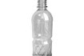

|
 |
KörnyezetbarátHogyan lesz a PET palackból polárpulcsi?Ma már a magyarok többsége is követendõ szokásnak tartja a háztartásokban, irodákban keletkezõ hulladék válogatva gyûjtését, bár a Magyarországon jelenleg mûködõ több mint 5000 gyûjtõsziget a legfrissebb felmérés szerint még mindig kevés ahhoz, hogy mindenkinek „elég közel” legyen.Pedig egy kis kitérõvel rengeteget tehetünk az egyre rosszabb állapotban lévõ környezetünkért. Kevesebb szemét, kevesebb energia, egészségesebb környezet. A szétválogatva gyûjtött hulladék újrahasznosítása során azokat az anyagokat, amelyeket egyébként eldobnánk, szennyezve ezzel a környezetet, nyersanyagként használjuk fel. Az újrahasznosítás, elõkelõbb nevén a recycling, energia- és nyersanyagkímélõ eljárás: egyrészt csökken a valóban szemét, azaz semmi másra nem használható hulladék mennyisége, másrészt a környezet terhelése is, mivel az újrahasznosítható anyagok révén kevesebb természetes nyersanyagra van szükségünk. Tudtad, hogy
Mi lesz a szelektíven gyűjtött hulladékból?Sajnos még mindig sokan gondolják azt, hogy a konténereket elszállítás után összeöntik.Ez természetesen nem így történik. A válogatva gyûjtött anyagokból további válogatás és tisztítás után többnyire ugyanaz lesz, ami volt. Az újragyártott üvegbõl újra üvegpalackok és befõttesüvegek készülnek, a papírból karton, papírtörlõ, vécépapír, gipszkarton, és az italos kartondobozokból újra kartondoboz, netán bútorlap. Az aprított üveget felhasználják üveggyapot készítésére vagy készülõ új utakban. A legsokoldalúbban a mûanyagok használhatók fel. Nemcsak PET palack formájában találkozhatunk újra a bedobált hulladékkal, hanem például DVD-tok, mûanyag háztartási eszköz vagy polár pulóver képében. |